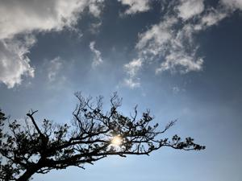
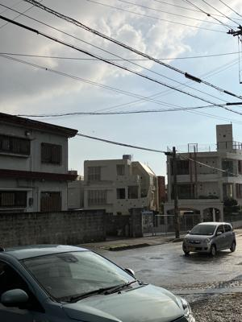
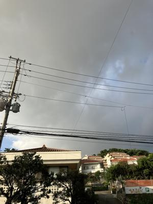
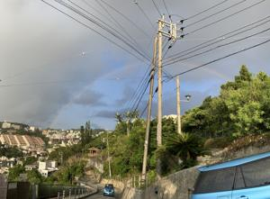

うるがいの話 ある日
最新: 怖い話【うるがいの話 ある日】とは 一日だけのプログです
『うるがいの話』の最新一日だけのプログで、通信料が少なく経済的だ。カニの画像をクリックすると全ての日付が載る『うるがいの話』サイトを表示します
|
|
【うるがいの話】 うるがい(ｳﾙｶﾞｲ urugai)とは、『もずくがに』の名前でとても大きくなります。 |
|---|---|
|
|
【カミマヤーの話】 猫のことを方言でマヤーといいます。カミマヤー（kamimayaa）とは、神の猫のことです。 |
|
【たながぁの音楽】 たながぁ（ﾀﾅｶﾞｰ tanagaa）とは手長えびのことで、何種類かあり大きいのは車 エビぐらいになります。 |

|
【ぶながぁの話】 ぶながぁ(ﾌﾞﾅｶﾞｰ bunagaa)とは、赤い髪の毛、赤い身体、そして身長は１ｍ２０ｃｍ ぐらい、川の蟹を食べているの目撃された。場所は沖縄県国頭郡大宜味村のと ある村僕の隣近所に住んでいる爺さんから、聞いた話です。 |
|
|
【ギーマの話】 ギーマ(giima)とは、山原の里山に咲くスズランに似た、 花を付けます。実は食べられます、 気が付くと口の周りが紫になっています。 |
2024年08月11日 (日）怖い話
16:12

首の無いヘビ（６０センチメートルほど、沖縄の青大将リュウキュウアオヘ
ビ）が近所の駐車場の前の道路に、のびていた。また、野良猫がやっちまっ
たか。それにしても、この前も野ネズミを一匹、抹殺したばかりだといゆう
のに。
蜂の巣が、あるとヨメが大騒ぎ！、なんと二つ（３センチほど、小さい）も
ある。夕方、排除する。どうだ怖い話だろう。
きのう、ジョギンギするとき、雨が降るとは想定せず走る。しばらくすると
黒い雨雲が・・・、やがてパラパラと雨粒が降ってきた。雨宿りする。
底にはバイクの人が、既に雨宿りをしていた。（１７時３２分）

そして、小降りになったところで再ラン、が、またしても（１７時５４分）
今度は、自転車の女性と、ウォーキングしていたであろう男性と一緒に雨宿
り。

地獄坂を登り過ぎると、虹が！、パノラマ写真で撮影する（１８時０３分）

家に着く５０メートル手前で本格的な土砂降り、雨は１９時３０分頃まで降
り続けた。おかげで、ＢＳ衛星放送に影響があったため１９時開始の録画が
オジャンになった。マ、左手首は順調に快復しているのでいいか。
１５時５３分 ビットコインの総資産 ￥２５、９７９（↓１６６）